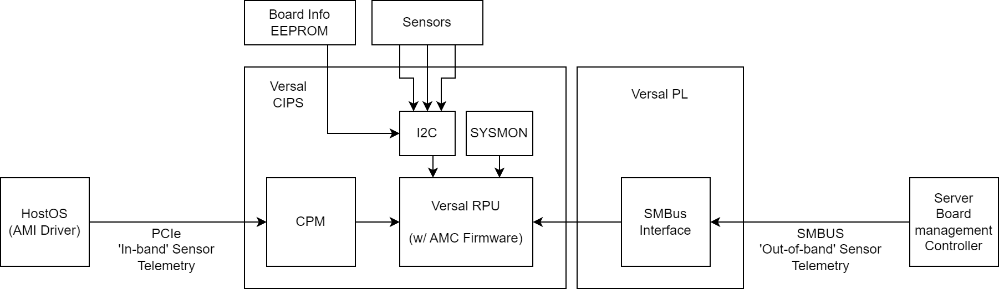

AMR - Board Management Solution¶
Overview¶
AMD Alveo™ cards are designed to be production ready for deployment in server environments. To facilitate this, a range of sensors are included on the card to allow its state to be monitored during operation. Management infrastructure in the card and server environment sense and adjust the operating conditions within the server and card to ensure that both can operate efficiently within the current power and thermal conditions of the server environment. The combination of hardware to support these sensors and their related software and interfacing standards in AMR is called the board management solution. This page gives an outline of how AMR enables board management for interfacing to server management infrastructure via standard interfaces like SMBUS and for general status reporting via PCIe™ in-band communication.

Alveo V80 Sensors¶
Three different types of sensors can be found on the Alveo V80 card:
Card-level sensors integrated on the V80 PCB allow for whole card-level monitoring power and temperature characteristics.
Component-level sensors integrated with major card components allow monitoring of the QSFP serial-interfaces.
FPGA-level sensors integrated within the Alveo V80 device allow monitoring of conditions within the FPGA and HBM.
A specification of the card and component level sensors included on the Alveo V80 can be found in the Alveo V80 Data Center Accelerator Cards Data Sheet (DS1013). FPGA level sensors are accessed via the AMD Versal™ architecture’s built-in monitoring primitive, sysmon. Card and component level sensors are accessed via the I2C buses on the V80 card.
The following sections give a brief overview of how Alveo sensors are modeled and how AMR hardware and AMR management controller (AMC) firmware components are engineered to allow readback and react to changing sensor data recovered from each card.
Alveo Sensor Data Model (ASDM)¶
The Alveo sensor data model is an abstraction of the sensor capabilities of an Alveo card so that software can present a consistent sensor interface across the range of different Alveo card types, even if the cards themselves have different characteristics and are managed by different software stacks. The ASDM’s scalable data model specification accommodates the natural variation in the number and type of various sensors across different cards. While AMR V80’s reference hardware and firmware are specific to the Alveo V80, the sensor specification used in the AMC firmware and other host AMR Management Interface (AMI) software are aligned to the ASDM and can convey similar sensor status to other Alveo cards that the application developer may have used.
A full specification of the set of sensors supported by the Alveo V80 card can be found in the Alveo V80 Data Center Accelerator Cards Data Sheet (DS1013) and the AMC software derived version of this specification can be found in the AMC firmware’s profile_sensors.h source file. In addition to dynamic monitoring of the V80 card’s power and thermal state, the ASDM also allows access to the board identification data stored in the Alveo FRU (field replaceable unit) EEPROM (also contained in the Alveo V80 Data Center Accelerator Cards Data Sheet (DS1013)).
In-band (PCIe) Management¶
The AMC firmware running within the V80s RPU subsystem includes software services that can read and monitor the V80 sensors. When requests for sensor data are sent over the PCIe® interface, this is referred to as ‘in band’ as the board management communication is intermixed with other application data transported to the card. The AMI utility program builds and sends command requests via the host driver to the AMC firmware to sample and report back the state of the V80 sensors (see the ami_tool sensors subcommand for more information). The operating thresholds of the sensors included in the ASDM allow the AMC firmware to report back whether a given sensor is near or has exceeded operating thresholds. Additionally, the AMC firmware includes a service that monitors the value of sensors with respect to specified operating thresholds. If thresholds are exceeded, the AMC firmware service monitoring the sensors can request the firmware’s clock management service adjust or halt the clocking on the card.
Out-of-band (SMBus) Management¶
Alveo cards deployed to server environments typically must implement industry standard card management protocols so that the card’s configuration and operating state can be made known to the server’s own board management controller. On V80, the AMR hardware design includes an SMBus interface peripheral in the Versal programmable logic, and AMC firmware brings up MCTP/PLDM over that interface so the server BMC can identify the card (FRU EEPROM / UUID), discover it (PLDM over MCTP), and read sensor status at runtime.
Because the SMBus IP lives in the PL, AMC does not touch its registers at RPU boot. After a PDI that contains the IP is loaded (power-up user PDI, or a later PL PDI download/program), AMC probes the IP, initializes the SMBus FAL, starts the BMC proxy, and starts out-of-band telemetry. If the loaded PDI does not contain SMBus IP, that bring-up is skipped and can be retried after a later PDI load. See AMC architecture and BMC proxy.
The RAVE profile does not enable the SMBus stack (HAL_SMBUS_FEATURE is 0).
To confirm the path on V80 (program PL PDI, enable power-on load, reboot, IPMI temperature), see V80 BMC / SMBus out-of-band validation.